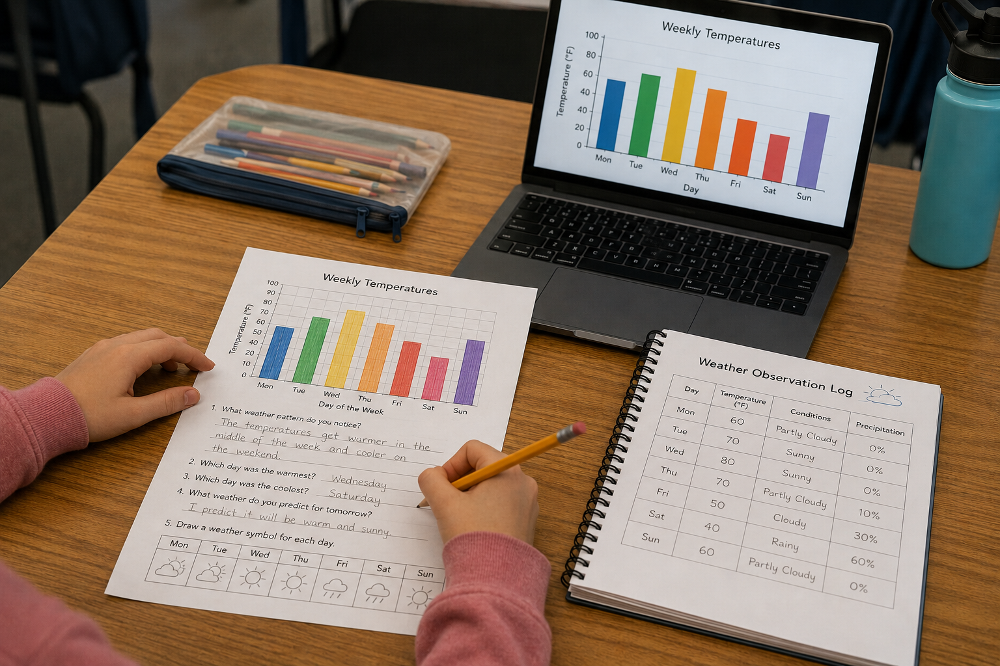
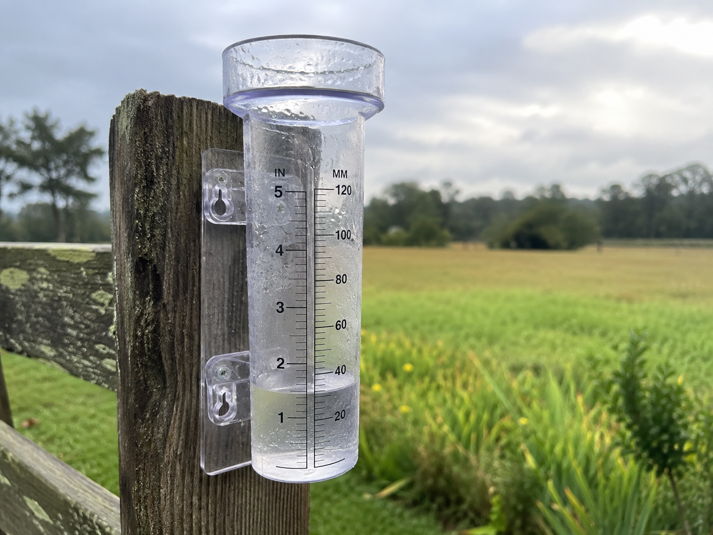
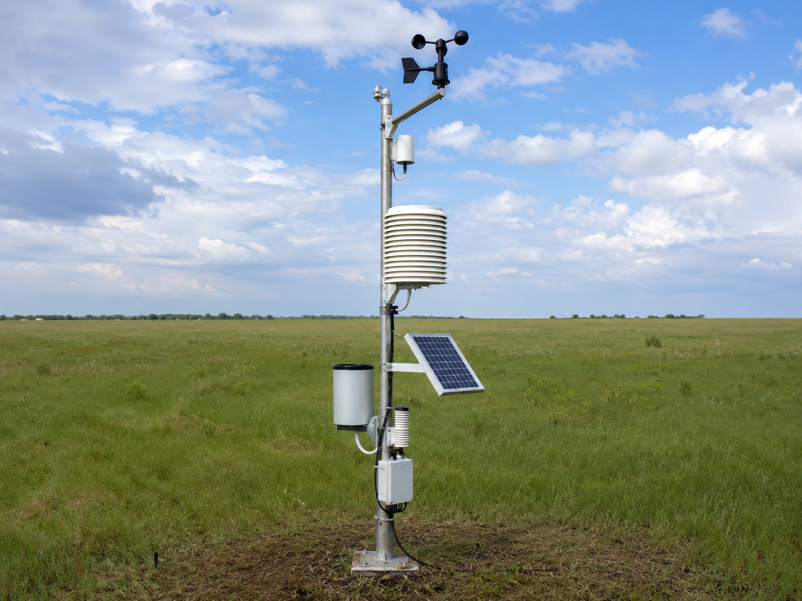

Keep this question in mind as you work through the investigation. By the end, you should have a good answer — and some data to prove it!
Start here. Learn the words you will use today.
Take a look at these two things — a list of temperatures and a bar graph of the same temperatures.
Tuesday: 72°F
Wednesday: 80°F
Thursday: 68°F
Friday: 55°F
Both the list and the graph show the exact same information — but one of them might make the pattern a lot easier to spot. We'll find out why today.
These are the words you'll use today as you work like a real meteorologist. Tap each card to flip it and read the definition.
Copy this sentence carefully into your science notebook:
"Scientists record and graph data so they can find patterns and make predictions."
Now learn the main science idea.

When scientists study the weather, they collect datadataInformation collected by observing or measuring. — things like how warm it was, whether it rained, and what the wind was doing. This is important work. But a long list of numbers can be hard to read.
Imagine you wrote down the temperature every day for a whole year. That's 365 numbers. Looking through that list for a pattern would take a long time. That's where graphs come in.

A bar graphbar graphA graph that uses bars of different heights to compare information. turns numbers into shapes you can compare with your eyes — fast. Each bar stands for one category (like a day of the week). The height of the bar shows the value (like the temperature).
You can look at a good bar graph for three seconds and answer questions that would take three minutes to work out from a list. The tallest bar? That's the highest temperature. A bunch of bars the same height? That's a steady pattern.
Here's what makes graphs really powerful: once you can see a patternpatternSomething that repeats in a predictable way., you can make a predictionpredictionA statement about what will probably happen, based on evidence.. If temperatures have been rising all week and the sky is clear, you might predict it will be warm tomorrow.
That's not guessing — that's science. Real meteorologists do this every time they say "expect a high of 75° on Tuesday." They found the pattern, and they used it to look ahead.
Scientists record and graph data to find patterns they might miss in a list of numbers. When the same pattern repeats week after week, scientists can use it to predict what the weather will probably do next.
Patterns are everywhere in weather — and bar graphs are one of the best tools for making them visible.

Curious? Go Deeper
Bar graphs aren't the only kind scientists use. A line graph connects points with a line and is great for showing how something changes over time — like a temperature rising throughout a single day. A pictograph uses tiny pictures instead of bars.
Meteorologists also use something called a scatter plot to see if two things are connected — like whether humidity and rainfall go up together. If the dots all slant in the same direction, there's a relationship worth investigating further.
Next time you see a weather forecast, look carefully at the graphs they use. What kind are they? What pattern are they trying to show you?
Now test the idea yourself.
You'll need: Your science notebook, pencil, colored pencils, and a ruler. Use the weather data from Lesson 2.01 if you have it — or use the sample data table below.
| Day | Temperature (°F) | Conditions | Precipitation? |
|---|---|---|---|
| Monday | 60°F | ☁️ Cloudy | No |
| Tuesday | 72°F | ⛅ Partly Cloudy | No |
| Wednesday | 80°F | ☀️ Sunny | No |
| Thursday | 68°F | ⛅ Partly Cloudy | No |
| Friday | 55°F | 🌧 Rainy | Yes |
Follow each step carefully. Record everything in your science notebook as you go.
Copy the data table. In your notebook, draw a table with four columns: Day, Temperature (°F), Conditions, and Precipitation. Copy in the data — either from the sample above or from your own Lesson 2.01 weather log.
Set up your bar graph. On a fresh notebook page, draw two axes — a vertical line (going up) and a horizontal line (going across). Label the horizontal axis "Day of the Week" and mark Monday through Friday. Label the vertical axis "Temperature (°F)" and mark it from 40°F at the bottom to 90°F at the top, going up in steps of 10.
Draw and color the bars. For each day, find the right temperature on your vertical axis and draw a bar up to that height. Use a different color for each bar. Use your ruler to keep the bars straight and the same width. Write the temperature number at the top of each bar.
Add a title and weather symbols. Give your graph a title at the top — something like "Weekly Temperatures." Then, below the day labels, draw a small weather symbol for each day: ☀️ sunny, ⛅ partly cloudy, ☁️ cloudy, 🌧 rainy.
Find the pattern and make a prediction. Look at your finished graph. In your notebook, answer these in complete sentences:
• Which day was warmest? Which was coolest?
• Write a pattern statement: "The pattern I see is ________." (Did temperatures rise, fall, or rise and then fall?)
• Write a prediction with evidence: "I predict Saturday will be ________ because the data shows ________."
Before moving on, look back at the work you did during the investigation. A good scientist reviews their notes before moving to the next step.
Ask yourself: Did I record specific details — not just "it was warm" but actual temperatures and conditions? Does my prediction connect to something I actually observed? Can I explain my thinking using evidence from my notes?
Think about it: Tell the story of your investigation — what you did, what you noticed, and what you figured out. Use your notebook notes to help you.
Think through each question on your own or talk about them with someone nearby. You don't need to write these down — they're for thinking.
Check what you understand.
Show what you learned.
🔍 Part A — Read the Graph
Use the bar graph you made in your science notebook to answer these questions.
✍️ Part B — Write & Explain
Look at your finished bar graph. What weather pattern does it show — and how could a meteorologist use that pattern?
What do you think?
💡 Start with: "The pattern I see in my graph is…"
What did you observe that supports your thinking?
💡 Start with: "I know this because when I looked at my graph, I noticed…"
Why does that make sense?
💡 Start with: "This makes sense because…"
📚 Try to use at least one of these words: data, pattern, prediction, bar graph
🎨 Part C — Draw & Label
Take a photo of the bar graph you made in your science notebook and upload it. Make sure it shows all five days, labeled axes, a title, and your weather symbols. Or, if you prefer, draw a new final version here on paper before photographing it.
Think about it: Go back to your Notice & Wonder warm-up. You wrote down which you thought was easier — the list or the graph. Does y